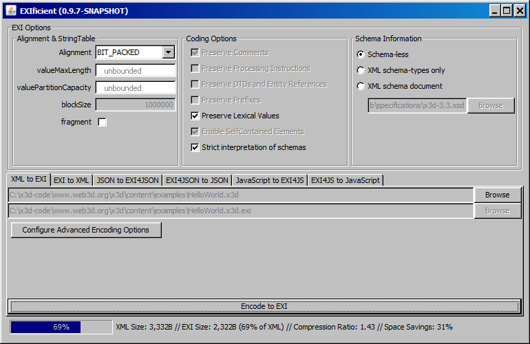

X3D Java Scene Access Interface Library (X3DJSAIL) |
X3D Java Scene Access Interface Library (X3DJSAIL) supports programmers with standards-based X3D Java interfaces and objects, all as open source.
Abstract | Codebase | CLASSPATH and Command Line | Configuration Properties | Conversions including Blender, MeshLab | Design Features | Downloads | Examples | EXI | Javadoc | License | Other Implementations | README | References | Specification Changes | TODO | Utility Methods | Contact
X3DJSAIL, the X3D Java Scene Access Interface Library is a set of strongly typed Java application programming interfaces (APIs) providing programmer access to an X3D scene graph. Two integrated Java packages are included that contain X3D SAI interfaces and support the X3D Graphics Standards for Java programmers.
org.web3d.x3d.jsail provides concrete implementation-oriented classes for building X3D scenes using standalone Java objects.
org.web3d.x3d.sai contains standard X3D SAI interfaces to independently compile Script-node source for use in X3D players.
Available products include Javadoc documentation, several thousand self-validating Examples, source code, compiled classes build support, run-time jar archives, and draft specification annexes for node interfaces and abstract-node type interfaces.
Goals include making it easy to create an X3D scene graph using Java, while also making it hard to create an incorrect or invalid X3D model.
This library supports multiple uses:
X3DJSAIL source is compiled and tested under OpenJDK 17 (default) and occasionally Oracle JDK 17 and Oracle JDK 1.8 as well. X3DJSAIL binaries are typically compatible with Java 1.8 and greater.
This work supports X3Dv4 development. X3DJSAIL implements the X3D Unified Object Model (X3DUOM) in support of current and emerging capabilities found in the Web3D Recommended Standards.
version 4.0 release is complete following satisfactory conversions of all
X3D Examples Archives.
Javadoc links are provided for all model archives. See
build.java.all.log.txt
for console logs from all examples.
For developers, the Savage Developers Guide provides further details on compilation configuration settings for Ant, Java, and Netbeans.
Command line invocation is feasible through use of the org.x3d.jsail.CommandLine class.
Note that model validation is always performed as part of X3DJSAIL operations.
java -classpath someLocalPath/X3DJSAIL.4.0.full.jar org.web3d.x3d.jsail.CommandLine
[-help | -version | -home | -javadoc | -resources | -hints | -regexes | -tooltips | -X3DUOM]
[-properties [propertiesFile]]
[sourceModel.x3d | sourceModel.exi [-fromEXI] | sourceModel.gz [-fromGZIP] | sourceModel.zip [-fromZIP]]
[-canonical] [-validate] [-EXIFICIENT | -OpenEXI]
[-Tidy | -toX3D | -toXML | -toClassicVrml | -toJava | -toJSON | -toPython | -toVRML97]
[-toHTML | -toX3DOM | -toX_ITE | -toMarkdown | -toEXI | -toGZIP | -toZIP]
[-tofile [resultFile.*]] [-toImage [snapshotName.*]]
Example:
java -classpath someLocalPath/X3DJSAIL.4.0.full.jar org.web3d.x3d.jsail.CommandLine -help
Example:
java -classpath someLocalPath/X3DJSAIL.4.0.full.jar org.web3d.x3d.jsail.CommandLine HelloWorld.x3d -toVRML97 -toFile
X3DJSAIL.4.0.full.jar
Example CLASSPATH confirmation:
% echo $CLASSPATH
CLASSPATH='C:\x3d-code\www.web3d.org\x3d\stylesheets\java\jars\X3DJSAIL.4.0.full.jar'
Developer alternative: For developers, an alternative CLASSPATH configuration is "skinny jar"
X3DJSAIL.4.0.classes.jar
but note that Saxon stylesheet engine and other EXI .jar dependencies must also be provided.
% echo $CLASSPATH
CLASSPATH='C:\x3d-code\www.web3d.org\x3d\stylesheets\java\jars\X3DJSAIL.4.0.classes.jar;
C:\x3d-code\www.web3d.org\x3d\stylesheets\java\lib\saxon9he.jar;
C:\x3d-code\www.web3d.org\x3d\stylesheets\java\lib\exificient-gui-jar-with-dependencies.jar;
C:\x3d-code\www.web3d.org\x3d\stylesheets\java\lib\nagasena.jar'
java org.web3d.x3d.jsail.CommandLine
[-help | -version | -home | -javadoc | -resources | -hints | -regexes | -tooltips | -X3DUOM]
[-properties [propertiesFile]]
[sourceModel.x3d | sourceModel.exi [-fromEXI] | sourceModel.gz [-fromGZIP] | sourceModel.zip [-fromZIP]]
[-canonical] [-validate] [-EXIFICIENT | -OpenEXI]
[-Tidy | -toX3D | -toXML | -toClassicVrml | -toJava | -toJSON | -toPython | -toVRML97]
[-toHTML | -toX3DOM | -toX_ITE | -toMarkdown | -toEXI | -toGZIP | -toZIP]
[-tofile [resultFile.*]] [-toImage [snapshotName.*]]
Example:
java org.web3d.x3d.jsail.CommandLine -help
Example:
java org.web3d.x3d.jsail.CommandLine HelloWorld.x3d -toClassicVRML
Example:
java org.web3d.x3d.jsail.CommandLine HelloWorld.x3d.gz -fromGZIP
<target name="test.X3DJSAIL" depends="" description="Test X3DJSAIL" >
<echo message="==========================================="/>
<echo message="helpful invocations for CommandLine debugging"/>
<echo message="org.web3d.x3d.jsail.CommandLine -help"/>
<java classname="org.web3d.x3d.jsail.CommandLine"
classpath="${saxon.dir}/${saxon.jar};${java.jars.dir}/${jsai.full.archive.jar.name};.">
<arg value="-help"/>
</java>
<echo message="==========================================="/>
<echo message="org.web3d.x3d.jsail.CommandLine -properties ${java.examples.dir}/X3DJSAIL.properties"/>
<java classname="org.web3d.x3d.jsail.CommandLine"
classpath="${saxon.dir}/${saxon.jar};${java.jars.dir}/${jsai.full.archive.jar.name};.">
<arg value="-properties"/>
<arg value="${java.examples.dir}/X3DJSAIL.properties"/>
</java>
</target>
System.out.println ("===========================================");
System.out.println ("Test CommandLine invocations");
String[] args = {"-help" };
System.out.println ("CommandLine " + Arrays.toString(args));
CommandLine.run (args); // run these commands
System.out.println ("===========================================");
args = new String[] {"HelloWorldProgramOutput.x3d", "-toX3D", "-toFile", "HelloWorldProgramOutput.CommandLine.x3d" };
System.out.println ("CommandLine " + Arrays.toString(args));
CommandLine.run (args); // run these commands
System.out.println ("===========================================");
args = new String[] {"HelloWorldProgramOutput.x3d", "-EXIFICIENT", "-toEXI", "-toFile", "HelloWorldProgramOutput.CommandLine.EXIFICIENT.exi"};
System.out.println ("CommandLine " + Arrays.toString(args));
CommandLine.run (args); // run these commands
System.out.println ("===========================================");
-help output:
$ java org.web3d.x3d.jsail.CommandLine -help
Usage: java [-classpath X3DJSAIL.*.jar] org.web3d.x3d.jsail.CommandLine
[-help | -version | -home | -javadoc | -resources | -hints | -regexes | -tooltips | -X3DUOM]
[-properties [propertiesFile]]
[sourceModel.x3d | sourceModel.exi [-fromEXI] | sourceModel.gz [-fromGZIP] | sourceModel.zip [-fromZIP]]
[-canonical] [-validate] [-EXIFICIENT | -OpenEXI]
[-Tidy | -toX3D | -toXML | -toClassicVrml | -toJava | -toJSON | -toPython | -toVRML97]
[-toHTML | -toX3DOM | -toX_ITE | -toMarkdown | -toEXI | -toGZIP | -toZIP]
[-tofile [resultFile.*]] [-toImage [snapshotName.*]]
-classpath X3DJSAIL.*.jar # optional classpath, can be set as environment variable
org.web3d.x3d.jsail.CommandLine # CommandLine application
==================================#====== informational ======================
-help # provide this help message
-version # version date when this X3DJSAIL build was autogenerated
-home # launch X3DJSAIL home page
-javadoc # launch X3DJSAIL javadoc page
-resources # launch X3D Resources page
-hints # launch X3D Scene Authoring Hints page
-regexes # launch X3D Regular Expressions page
-tooltips # launch X3D Tooltips page
-X3DUOM # launch X3D Unified Object Model (X3DUOM) page
==================================#====== inputs =============================
-properties [propertiesFile] # override X3DJSAIL properties (default file: X3DJSAIL.properties)
-EXIFICIENT # use Exificient (default) as EXI_ENGINE
-OpenEXI # use OpenEXI (Nagasena) as EXI_ENGINE (testing in progress)
sourceModel.x3d # source model file name, X3D format
sourceModel.exi -fromEXI # source model file name, EXI format
sourceModel.gz -fromGZIP # source model file name, GZIP format
sourceModel.zip -fromZIP # source model file name, ZIP format
==================================#====== operations =========================
-canonical # canonical XML output using X3D Canonicalization (c14n)
-validate # validate correctness of loaded model
-Tidy # X3D-Tidy cleanup in .x3d (XML) format
-toX3D # output in .x3d (XML) format
-toXML # output in .xml (X3D) format
-toClassicVrml # output in .x3dv (ClassicVrml) X3D format
-toJava # output in .java source code using X3DJSAIL
-toJSON # output in .json (JavaScript Object Notation) format
-toPython # output in .py Python source code
-toVRML97 # output in .wrl (VRML97) format
-toHTML # output in .html pretty-print documentation
-toX3DOM # output in .xhtml page with X3DOM display of X3D model
-toX_ITE # output in .html page with X_ITE display of X3D model
-toMarkdown # output document metadata (meta tags) in .md (Markdown) format
-toEXI # output in .exi (Efficient XML Interchange) compressed-XML format
-toGZIP # output in .gz (X3D XML) format, with gzip compression
-toZIP # output in .zip (X3D XML) format, with zip compression
==================================#====== outputs ============================
-tofile [resultFile.*] # specify output filename (otherwise original name with extension)
-toImage [snapshotName.*] # create output images for each Viewpoint using Blender
Setting X3DJSAIL properties can override default library values. See
X3DJSAIL.properties and
X3DJSAIL.properties.template example
X3DJSAIL properties can also be accessed programmatically using the
ConfigurationProperties
utility class. Example constants and accessor methods:
ConfigurationProperties.PROPERTIES_FILENAME_DEFAULT
ConfigurationProperties.getPropertiesFileName()
ConfigurationProperties.setPropertiesFileName(fileName)
ConfigurationProperties.loadProperties()
ConfigurationProperties.ERROR_NOT_CONNECTED_TO_SCENE_GRAPH
ConfigurationProperties.WARNING_PROTOINSTANCE_NOT_FOUND
ConfigurationProperties.isNormalizeCommentWhitespace()
ConfigurationProperties.setNormalizeCommentWhitespace(boolean)
ConfigurationProperties.isStripTrailingZeroes()
ConfigurationProperties.setStripDefaultAttributes(boolean)
etc.
X3D scene graph run-time capabilities are interoperable and functionally equivalent for all X3D file encodings and programming-language bindings. Current and planned support is shown in the following table.
| File Load and Import | ||
X3D XML
encoding .x3d
(implemented using DOM)
|
X3D ClassicVRML
encoding .x3dv
(TODO)
|
X3D VRML97
encoding .wrl
(TODO)
|
Efficient XML Interchange (EXI)
compressed
.exi
(implemented with choice of EXIficient or OpenEXI) |
GZIP-compressed .x3d
(implemented)
|
ZIP-compressed .x3d
(implemented)
|
X3D JSON
encoding .json
(TODO)
|
Geometry import:
.stl
(implemented)
and
.ply
(TODO)
|
|
| File/Stream Export Serialization | ||
X3D XML .x3d encoding, using
X3D canonical form
default output serialization format
(implemented)
|
ClassicVRML .x3dv encoding
(implemented)
|
VRML97 .wrl encoding
(implemented)
|
X3DOM
scene page
X3dom.xhtml
(implemented)
|
X_ITE
(formerly Cobweb) scene page
HelloWorldProgramOutputX_ITE.html
(implemented)
|
-toImage
.png screenshot using locally installed
Blender
(implemented)
|
X3DJSAIL
.java source using
X3dToJava.xslt
(implemented)
|
X3D .json encoding using
X3dToJson.xslt
(implemented)
|
X3D Python .py source using
X3dToPython.xslt
(implemented)
|
Efficient XML Interchange (EXI)
.exi
(implemented with choice of EXIficient or OpenEXI) |
GZIP
.gz
(implemented)
|
ZIP
.zip
(implemented)
|
X3D Compressed Binary Encoding (CBE)
.x3db
(TODO)
|
Efficient X3D Encoding
.x3de
(proposed)
|
Shape Resource Container (SRC)
.src
(no longer planned for X3D v4, will allow .gltf instead)
|
XML Canonicalization (C14N)
(compatible, stricter X3D Canonical)
as CommandLine -canonical
|
XML Signature for authentication (TODO) | XML Encryption for confidential access and privacy (TODO) |
X3DJSAIL conversion capabilities continue to grow through addition of multiple exporters and importers. Open source rocks!
Related references: X3D Resources: Conversions and Translation Tools plus Export and Import by Applications.
Blender is an open-source 3D authoring tool that includes support for X3D import/export (FreeBSD Linux, MacOSX, Windows) (download).
If you have a local copy of Blender installed on your system, X3DJSAIL can invoke it via the BLENDER_PATH property
found either in the system environment variables or else the
X3DJSAIL.properties file.
.stl, .x3d, .ply, .obj, .3ds, .wrl (VRML97), U3D, COLLADA and others.
src/python/blenderScripts
java -classpath someLocalPath/X3DJSAIL.4.0.full.jar org.web3d.x3d.jsail.BlenderLauncher -help
java -classpath someLocalPath/X3DJSAIL.4.0.full.jar org.web3d.x3d.jsail.BlenderLauncher -l logfile.txt -convert file1.stl file2.x3d
java -classpath someLocalPath/X3DJSAIL.4.0.full.jar org.web3d.x3d.jsail.BlenderLauncher -l logfile.txt -toImage file.x3d
System.out.println("BlenderLauncher.run(\"-help\")");
org.web3d.x3d.jsail.BlenderLauncher.run("-help");
System.out.println("===========================================");
// ordinarily path shenanigans are not needed, but this is included as test code
System.out.print("Blender default path=" + ConfigurationProperties.getBlenderPath());
if (ConfigurationProperties.getBlenderPath().isEmpty())
{
System.out.print("[not set]");
}
System.out.println();
BlenderLauncher.checkBlenderPath(); // check local path and reset to OS-specific default if needed
System.out.println("Blender.checkBlenderPath() updated path=" + ConfigurationProperties.getBlenderPath());
System.out.println("=================================");
System.out.println("BlenderLauncher.hasBlender()=" + BlenderLauncher.hasBlender());
System.out.println("=================================");
System.out.println("Blender version=" + BlenderLauncher.getBlenderVersion());
System.out.println("BlenderLauncher.run(\"CleatClamp.x3d -toImage\")");
org.web3d.x3d.jsail.BlenderLauncher.run ("CleatClamp.x3d -toImage");
System.out.println("CommandLine.run(\"CleatClamp.x3d -toImage\") tests pass through");
org.web3d.x3d.jsail.CommandLine.run ("CleatClamp.x3d -toImage");
stylesheets/build.xml
<echo message="==========================================="/>
<antcall target="test.X3DJSAIL.BlenderLauncher"/>
<echo message="==========================================="/>
<target name="test.X3DJSAIL.BlenderLauncher" description="Test BlenderLauncher capabilities" >
<echo message="==========================================="/>
<echo message="org.web3d.x3d.jsail.BlenderLauncher -help"/>
<java classname="org.web3d.x3d.jsail.BlenderLauncher" classpath="${java.jars.dir}/${jsai.full.archive.jar.name};." fork="${fork}">
<arg value="-help"/>
</java>
<echo message="==========================================="/>
<echo message="org.web3d.x3d.jsail.BlenderLauncher -properties ${java.examples.dir}/X3DJSAIL.properties"/>
<java classname="org.web3d.x3d.jsail.BlenderLauncher" classpath="${java.jars.dir}/${jsai.full.archive.jar.name};." fork="${fork}">
<arg value="-properties"/>
<arg value="${java.examples.dir}/X3DJSAIL.properties"/>
</java>
<echo message="==========================================="/>
<echo message="org.web3d.x3d.jsail.BlenderLauncher -BLENDER_PATH ${env.BLENDER_PATH}"/>
<java classname="org.web3d.x3d.jsail.BlenderLauncher" classpath="${java.jars.dir}/${jsai.full.archive.jar.name};." fork="${fork}">
<arg value="-BLENDER_PATH"/>
<arg value="${env.BLENDER_PATH}"/>
</java>
<echo message="==========================================="/>
<echo message="org.web3d.x3d.jsail.BlenderLauncher ${java.examples.dir}/CleatClamp.stl -toImage"/>
<java classname="org.web3d.x3d.jsail.BlenderLauncher" classpath="${java.jars.dir}/${jsai.full.archive.jar.name};." fork="${fork}">
<arg value="${java.examples.dir}/CleatClamp.stl"/>
<arg value="-toImage"/>
</java>
</target>
Change notice.
MeshLab is now on a monthly release cycle. The latest versions have
removed meshlabserver which is used below
(see Where is Meshlabserver.exe in 2020.12 for details).
MeshLab now provides Python scripting capabilities instead.
Review and revision is in progress.
MeshLab is an open-source, portable, and extensible system for the processing and editing of unstructured 3D triangular meshes (Win64, MacOS, Linux Snap) (official download and developer releases).
If you have a local copy installed on your system, X3DJSAIL can invoke it via the MESHLAB_PATH property in the
X3DJSAIL.properties file.
.stl, .x3d, .ply, .obj, .3ds, .wrl (VRML97), U3D, COLLADA, and others.
java -classpath someLocalPath/X3DJSAIL.4.0.full.jar org.web3d.x3d.jsail.MeshLabLauncher -help
java -classpath someLocalPath/X3DJSAIL.4.0.full.jar org.web3d.x3d.jsail.MeshLabLauncher -l logfile.txt -i file1.stl -o file2.x3d
System.out.println("MeshLab default path=" + ConfigurationProperties.getMeshLabPath());
meshLabLauncher.checkMeshLabPath();
System.out.println("MeshLab.checkMeshLabPath() new path=" + ConfigurationProperties.getMeshLabPath());
System.out.println( "MeshLabLauncher.hasMeshLab()=" + MeshLabLauncher.hasMeshLab());
System.out.println("MeshLabLauncher.getMeshLabVersion()=" + MeshLabLauncher.getMeshLabVersion());
boolean conversionResult = meshLabLauncher.convertModel(
"C:/x3d-code/www.web3d.org/x3d/stylesheets/java/examples",
"CleatClamp.stl", "CleatClamp.RoundTrip.stl"); // converts ascii to binary
X3D importedX3D = MeshLabLauncher.importModel(
"C:/x3d-code/www.web3d.org/x3d/stylesheets/java/examples",
"CleatClamp.stl");
System.out.println("MeshLabLauncher.wasPriorCommandSuccessful()=" + MeshLabLauncher.wasPriorCommandSuccessful());
System.out.println("meshLabLauncher.getPriorMeshLabTraceLogFileName()=" + MeshLabLauncher.getPriorMeshLabTraceLogFilePath());
System.out.print ("meshLabLauncher.getPriorMeshLabTraceLogContents()=" + meshLabLauncher.getPriorMeshLabTraceLogContents());
stylesheets/build.xml
<echo message="org.web3d.x3d.jsail.MeshLabLauncher -help"/>
<java classname="org.web3d.x3d.jsail.MeshLabLauncher" classpath="${java.jars.dir}/${jsai.full.archive.jar.name};." fork="${fork}">
<arg value="-help"/>
</java>
<echo message="==========================================="/>
<echo message="org.web3d.x3d.jsail.MeshLabLauncher ${java.examples.dir}/CleatClamp.stl ${java.examples.dir}/CleatClamp.MeshLabLauncher.x3d"/>
<java classname="org.web3d.x3d.jsail.MeshLabLauncher" classpath="${java.jars.dir}/${jsai.full.archive.jar.name};." fork="${fork}">
<arg value="${java.examples.dir}/CleatClamp.stl"/> <!-- input model -->
<arg value="${java.examples.dir}/CleatClamp.MeshLabLauncher.x3d"/> <!-- output model -->
</java>
<echo message="==========================================="/>
<echo message="org.web3d.x3d.jsail.MeshLabLauncher ${java.examples.dir}/CleatClamp.stl ${java.examples.dir}/CleatClamp.MeshLabLauncher.stl"/>
<java classname="org.web3d.x3d.jsail.MeshLabLauncher" classpath="${java.jars.dir}/${jsai.full.archive.jar.name};." fork="${fork}">
<arg value="${java.examples.dir}/CleatClamp.stl"/> <!-- input model -->
<arg value="${java.examples.dir}/CleatClamp.MeshLabLauncher.stl"/> <!-- output model -->
</java>
This work implements the X3D Unified Object Model (X3DUOM) in support of current and emerging capabilities found in the Web3D Recommended Standards, especially X3Dv4.
Success metric: the X3D information model is sufficient to support round-trip conversion of any X3D scene from one encoding to another.
org.web3d.x3d.sai Java interfaces so that
author-created source code for Script nodes can be precompiled and later work with a variety of
X3D player implementations.
org.web3d.x3d.jsail package of SAI concrete objects that defines instantiable classes, constants and utility methods.
Complementary design enables standalone X3D Java programming, with no X3D Script node or external HTML browser required.
The following software-architecture principles have influenced codebase design.
org.web3d.x3d.sai.InvalidFieldValueException exception is thrown.
X3DJSAIL can be used in any Java project (version 1.8 or greater) by including one of the following jar files in the application CLASSPATH.
X3DJSAIL.4.0.full.jar can be unzipped to create a complete local copy of all source, binaries, documentation and example programs.
If visible via CLASSPATH, it is also executable via the
Command Line.
X3DJSAIL.4.0.classes.jar can be used by developers for server-side usage or integration in other applications.
Further CLASSPATH modifications may be needed to to use it.
For full operation, third-party dependency jars found in the
lib subdirectory must also be in the application CLASSPATH.
Examples are shown under
Command Line use.
X3DJSAIL development:
Initial codebase development is building out features in a single example "smoke test" program for comprehensive testing.
Long-term plans include creation (and possibly autogeneration) of a unit-test suite to always ensure that capabilities and features remain working.
Efficient XML Interchange (EXI) is a World Wide Web Consortium (W3C) Recommendation that provides compact, high-performance compression for XML and JSON files.
|  |
The OpenEXI introduction whitepaper describes how EXI design produces documents that decompress directly into computer memory, with no parsing of decompressed data required.
EXI file compaction and computational performance have been demonstrated to be superior to a variety other compression schemes including gzip, zip, BSON, CBOR, and other compressed file formats.
Other X3D Java implementations are partial and seldom updated.
DEF, USE and class attributes.
.x3d source models in the
X3D Examples Archives
is at a high level of maturity.
IS/connect support,
improve ProtoInstance handling without needing containerField.
containerField
values.
ID, IDREF, NMTOKEN and NMTOKENS.
appinfo and documentation fields.
Ensure that specification support for ProtoInstance includes DEF USE IS class and metadata fields.
java.util.logging options as alternatives to strict exception throwing.
Provides
ConfigurationProperties.debugModeActive
initializer and
ConfigurationProperties.setDebugModeActive(boolean),
ConfigurationProperties.isDebugModeActive()
methods to enable verbose debugging output when desired.
EXI_ENGINE_OPENEXI
and
EXI_ENGINE_EXIFICIENT
for selection between implementations
EXIficient (implemented)
and
Nagasena OpenEXI (testing in progress)
to provide XML-based
Efficient XML Interchange (EXI)
compression.
SF/MF Image and Matrix* classes
(typically adapting source code from the Xj3D implementation).
DEF and name values
when first constructing HAnim nodes.
Include naming checks in each node's self-checking validate() method.
.stl,
.ply and others).
Adding native export to this codebase can likely be adapted to X3D SAI codebases in other programming languages.
Even so, robust conversion support in open-source MeshLab and Blender handles most needs.
import statements within autogenerated library source code.
.class byte code with various X3D players
supporting Java in the Script node (if any).
validate() testing for special fields requiring a higher-than-default component level, when they occur.
Example: Inline load field. Requires additional information in X3D Unified Object Model.
sourceCode methods
to embed ecmascript: source without escape characters, equivalent to last entry in the url list.
Utility methods provide additional helpful functionality to X3D Java programmers, going beyond the minimalist required interfaces in the X3D Java SAI specification.
Warning: note that, by default, creating or decompressing files may overwrite prior versions.
See
ConfigurationProperties.isOverwriteExistingFiles()
and
setOverwriteExistingFiles(newValue)
to modify overwrite permissions.
getHtmlID(), getCssClass(), getCssStyle() and
setHtmlID(newValue), setCssClass(newValue), setCssStyle(newValue).
Box.getHtmlID() and
Box.setHtmlID(java.lang.String),
Box.getCssClass() and
Box.setCssClass(java.lang.String),
Box.getCssStyle() and
Box.setCssStyle(java.lang.String)
HelloWorldX3D4.x3d
(pretty print) and
HelloWorldX3D4.java
X3D.loadModelFromFileX3D(fileName),
X3D.loadModelFromFileX3D(x3dFile),
X3D.replace(newX3DObject)
X3D.fromFileEXI(exiFileName)
(using EXIficient, OpenEXI testing in progress)
X3D.fromFileGZIP(gzipFileName)
X3D.fromFileZIP(zipFileName, modelFileName)
modelFileName is provided, then the first .x3d model encountered in the zip file is returned (if any).
X3DLoaderDOM.loadModelFromFileX3D(fileName),
X3DLoaderDOM.loadModelFromFileX3D(x3dFile),
X3DLoaderDOM.getValidationResult()
X3DLoaderDOM.getDomDocument(),
X3DLoaderDOM.toX3dModelInstance()
and other
methods.
File object if successful.
Similar toStringEncoding and toStringLanguage methods are also provided.
|
X3D.toFileDocumentationHtml(String filename)
with stylesheets
STYLESHEET_HTML_DOCUMENTATION,
STYLESHEET_ExtrusionCrossSectionSVG
X3D.toFileX3DOM(String filename)
with stylesheet
STYLESHEET_X3DOM
X3D.toFileX_ITE(String sourceSceneName, String filename)
with stylesheet
STYLESHEET_X3DOM
(with parameter settings)
X3D.toFileX3dTidy(String filename)
and
X3D.toStringX3dTidy()
with stylesheet
STYLESHEET_X3DTIDY
(TODO add parameter settings)
X3D.toFileModelMetaMarkdown(String filename)
and
X3D.toStringModelMetaMarkdown()
with stylesheet
STYLESHEET_MODEL_META_TO_MARKDOWN
X3D.toFileJSON(String filename)
with stylesheet
STYLESHEET_JSON
X3D.toFileJava(String filename)
with stylesheet
STYLESHEET_JAVA
ConfigurationProperties.setXsltEngine(String filename)
with
XSLT_ENGINE_saxon
(default) or
XSLT_ENGINE_nativeJava.
createDeclarativeShapeTests().
addChild()
for nodes implementing the
X3DGroupingNode
interface. This is a big help because SAI-specified interfaces for
addChildren()
are required to return void.
.hasAncestorSceneObject() and
.findAncestorSceneObject()
.hasAncestorX3DObject() and
.findAncestorX3DObject(),
findAncestorProtoBody()
and
hasAncestorProtoBody().
findNodeByDEF(DEFvalue),
findElementByNameValue(nameValue),
findElementByNameValue(nameValue, elementName),
findAncestorElementByName(ancestorElementName)
and
hasAncestorElementByName(ancestorElementName).
containerField_DEFAULT to each node, as well as a handful of
containerField_ALTERNATE_VALUES.
Interestingly these values are typically never needed in Java SAI programs (unless someone is writing a low-level XML parser or somesuch).
For more detail:
X3D Scene Authoring Hints: containerField.
ProtoDeclare,
ProtoInterface,
ProtoBody,
ExternProtoDeclare,
ProtoInstance,
IS
and
connect.
fieldObject
and
fieldValueObject.
ROUTE fields using
ROUTE.validate()
method.
X3D.validate()
to confirm correctness of all attribute and contained-node values.
This feature essentially confirms the strongly typed design and value-range checks already in place.
DEF and USE attributes.
Follow up with related specification issues for abstract SAI and corresponding encoding specifications.
class attribute to Object Model for X3D (OM4X3D).
Follow up with related specification issues for abstract SAI and corresponding encoding specifications.
DEF name for immediate identification when creating a new node.
SFNode and MFNode instantiation.
Add boolean hasSomeFieldName() methods to indicate whether each SFNode/MFNode field contains either strongly typed node(s) or ProtoInstance node(s).
addChildren/clearChildren
/removeChildren/setChildren and related accessor methods.
ArrayList
data structures.
ConfigurationProperties
serialization support for line indent character and indent increment.
addComments() methods for any node or statement, using
CommentsBlock
class.
0xRRGGBB integer colors (through defined constants and utility methods) to
SFColorObject
and related classes.
ROUTE connections, e.g.
OrientationInterpolator.toField_SET_FRACTION
and
OrientationInterpolator.fromField_VALUE_CHANGED.
getFieldType(fieldName) and getAccessType(fieldName)
for each X3DConcreteElement
unit statement
scale factors.
toStringX3D() serialization-output settings support
X3D canonical form,
with
ConfigurationProperties
providing additional settings for showing default attribute=value pairs.
Thus additional
X3D Canonicalization (C14N)
integration is no longer needed.
headObject.getMetaByName(metaName)
getComponentByName(componentName) and getUnitByName(unitName),
ScriptObject.findFieldByName(fieldName) (also for ComposedShaderObject, ShaderPartObject and ShaderProgramObject),
and
ProtoInstanceObject.findFieldValueByName(fieldValueName)
cleanupEnclosingQuotes(singleValue)
and
cleanupEnumerationValue(values).
acceptableNodeTypes restrictions are met for operations on children nodes, such as
ViewpointGroupObject.
IMPORTObject
and
EXPORTObject.
ConfigurationProperties.setValidationExceptionAllowed
to set whether partial results are allowed if validation exception occurs when serializing scene output.
Can be useful technique for debugging,
validationExceptionAllowed_DEFAULT
value is false for strict operation.
X3DConcreteNode.isNode(),
X3DConcreteStatement.isStatement()
and
CommentsBlock.isStatement()
ExtrusionObject
utility methods
isCrossSectionClosed(),
isSpineClosed()
and
toFileSvgCrossSection(fileName)
REGEX
string,
pattern,
validate(),
matches()
and
matches(String value).
SFColor.toStringCSS()
and
.toStringHTML()
methods.
ConfigurationProperties.isSFImagePixelOutputHexadecimal()
and
.setSFImagePixelOutputHexadecimal(boolean)
serialization support for
MF/SFImage.toString(),
.toStringHexadecimal()
and
.toStringDecimal().
SFVec3f.matchesBboxSizeType(String value).
Object appended.
Updated: 14 June 2022
X3D Java Scene Access Interface Library (X3DJSAIL) deployed release version is available online at
https://www.web3d.org/specifications/java/X3DJSAIL.html
Version-control open source for test programs, results and autogeneration build scripts are available in Sourceforge repository.
Questions, suggestions, additions and comments regarding the X3D Java SAI Library (X3DJSAIL) and X3D Unified Object Model (X3DUOM) design are welcome. Please send them to Don Brutzman (brutzman at nps.edu), John Carlson (yottzumm at gmail.com), and Roy Walmsley (roy.walmsley at ntlworld.com).